Lung dataset¶
The direct lung differentiation dataset from Hurley, K. et al. Cell Stem Cell (2020) doi:10.1016/j.stem.2019.12.009.
This dataset has multiple time points for the state manifold, but only one time point for the clonal observation on day 27.
[1]:
import cospar as cs
[2]:
cs.logging.print_version()
cs.settings.verbosity=3
cs.settings.data_path='lung_data_test_2' # A relative path to save data. If not existed before, create a new one.
cs.settings.figure_path='lung_figure_test_2' # A relative path to save figures. If not existed before, create a new one.
cs.settings.set_figure_params(format='png',dpi=75,fontsize=14) # use png to reduce file size.
Running cospar 0.0.2 (python 3.6.12) on 2021-02-01 11:38.
Load data¶
[3]:
adata_orig=cs.datasets.lung()
[4]:
adata_orig
[4]:
AnnData object with n_obs × n_vars = 15832 × 26766
obs: 'state_info', 'time_info'
uns: 'clonal_time_points', 'data_des'
obsm: 'X_clone', 'X_emb', 'X_pca'
Preprocessing (optional)¶
[5]:
preprocessing=False
if preprocessing:
cs.pp.get_highly_variable_genes(adata_orig,normalized_counts_per_cell=10000,min_counts=3,
min_cells=3, min_gene_vscore_pctl=80)
cs.pp.remove_cell_cycle_correlated_genes(adata_orig,corr_threshold=0.03,confirm_change=False) # optional step
cs.pp.get_X_pca(adata_orig,n_pca_comp=40)
#cs.pp.get_X_umap(adata_orig,n_neighbors=20,umap_min_dist=0.3) # we want to keep the original embedding
#cs.pp.get_state_info(adata_orig,leiden_resolution=0.5) # we want to keep the original state annotation
[6]:
cs.pl.embedding(adata_orig,color='state_info')
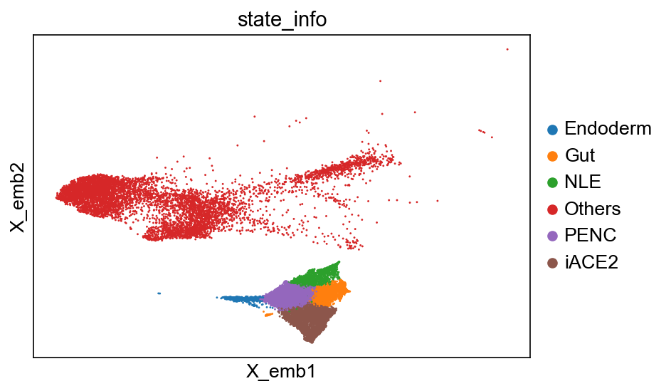
[7]:
cs.hf.check_available_choices(adata_orig)
Available transition maps: []
Availabel clusters: ['NLE', 'Endoderm', 'PENC', 'iACE2', 'Gut', 'Others']
Availabel time points: ['pos_17', 'D27', 'pos_21']
Clonal time points: ['D27']
Raw clonal data analysis (without using state information)¶
[8]:
cs.pl.clones_on_manifold(adata_orig,selected_clone_list=[30,198,150,58,263],
color_list=['blue','red'],time_points=['D27'],point_size=2)
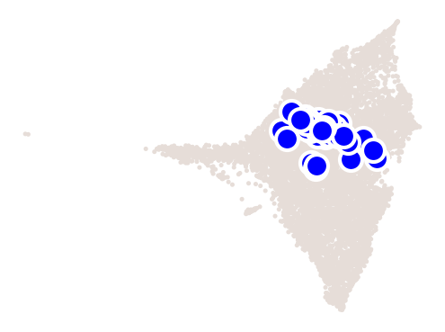
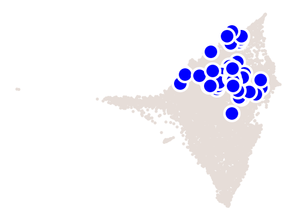
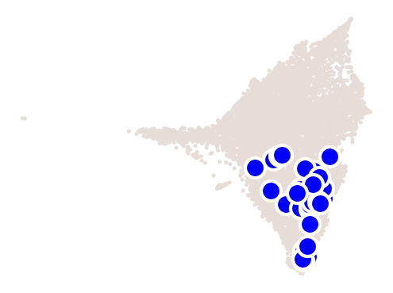
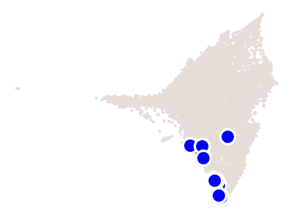
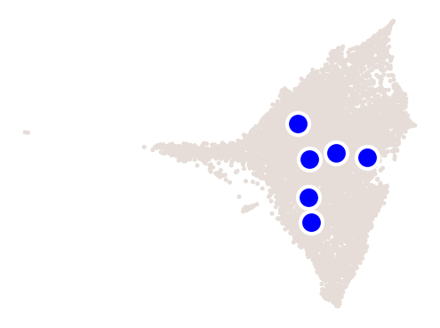
[9]:
plot_time_point='D27'
cs.pl.fate_coupling_from_clones(adata_orig,plot_time_point,
selected_fates=['iACE2', 'PENC', 'Gut', 'NLE', 'Endoderm'], color_bar=True)
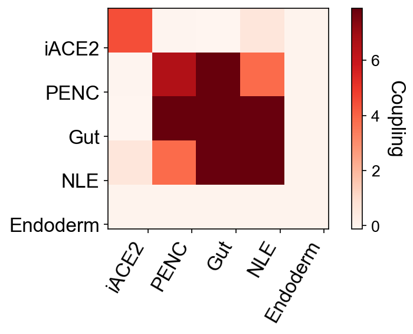
[10]:
plot_time_point='D27'
cs.pl.barcode_heatmap(adata_orig,plot_time_point, selected_fates=[], color_bar=True)
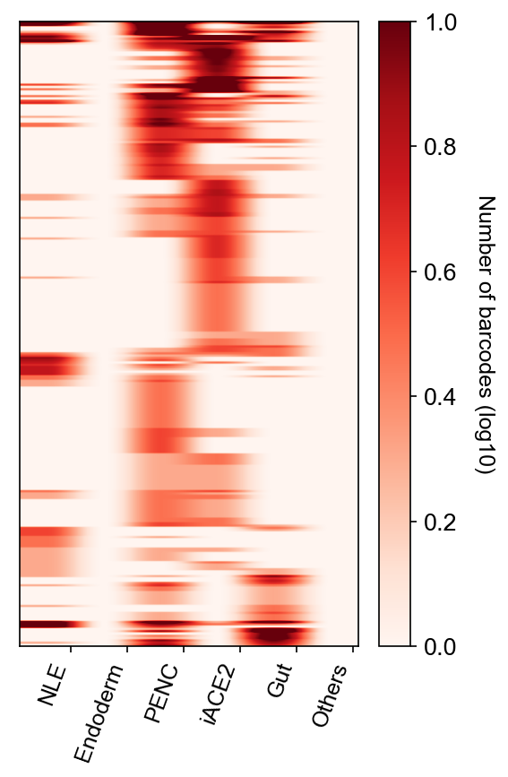
[11]:
# This is very slow to run. You may skip. (to get more accurate results, set N_resampling=10000)
select_fate_cluster='iACE2'
clonal_fate_bias,clone_id=cs.pl.clonal_fate_bias(adata_orig,select_fate_cluster,
clone_size_thresh=10,N_resampling=1000,compute_new=False)
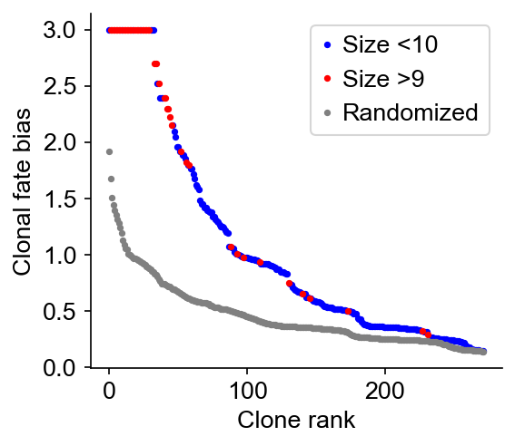
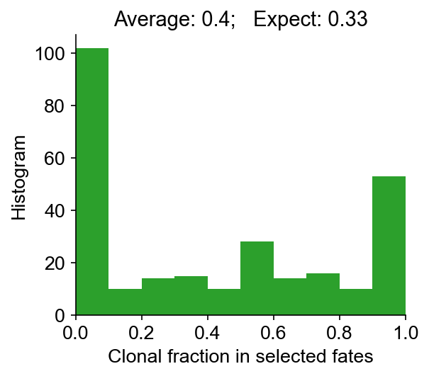
Infer transition map using clones from the last time point¶
It takes around 9 minutes to run it for the first time (the data has ~15000 cells). Later runs take < 3 mins.
[12]:
initial_time_points=['pos_17','pos_21']
clonal_time_point='D27'
adata=cs.tmap.infer_Tmap_from_one_time_clones(adata_orig,initial_time_points,clonal_time_point,use_full_Smatrix=True,
initialize_method='HighVar',HighVar_gene_pctl=80,smooth_array=[20,15,10],noise_threshold=0.2)
-------------------------------New Start--------------------------------------------------
Current time point: pos_17
-----------Pre-processing and sub-sampling cells------------
Compute similarity matrix: computing new; beta=0.1
Smooth round: 1
--> Time elapsed: 0.0472261905670166
Smooth round: 2
--> Time elapsed: 0.3395230770111084
Smooth round: 3
--> Time elapsed: 2.321316957473755
--> Orignal sparsity=0.10625611684179591, Thresholding
--> Final sparsity=0.06359080221047629
similarity matrix truncated (Smooth round=3): 4.5784912109375
Smooth round: 4
--> Time elapsed: 4.774793863296509
--> Orignal sparsity=0.19565865491781953, Thresholding
--> Final sparsity=0.10602011255244238
similarity matrix truncated (Smooth round=4): 6.487684965133667
Smooth round: 5
--> Time elapsed: 6.284330129623413
--> Orignal sparsity=0.26021891990074664, Thresholding
--> Final sparsity=0.14820819224009757
similarity matrix truncated (Smooth round=5): 5.18575119972229
Save the matrix~~~
Smooth round: 6
--> Time elapsed: 9.356720924377441
--> Orignal sparsity=0.31224158218520337, Thresholding
--> Final sparsity=0.18877169029228322
similarity matrix truncated (Smooth round=6): 5.6274871826171875
Smooth round: 7
--> Time elapsed: 9.806509017944336
--> Orignal sparsity=0.3542734135085911, Thresholding
--> Final sparsity=0.2273821595933655
similarity matrix truncated (Smooth round=7): 6.41509485244751
Smooth round: 8
--> Time elapsed: 12.279183149337769
--> Orignal sparsity=0.387948762026544, Thresholding
--> Final sparsity=0.26310728844759823
similarity matrix truncated (Smooth round=8): 5.6763060092926025
Smooth round: 9
--> Time elapsed: 12.471949100494385
--> Orignal sparsity=0.4144626540397264, Thresholding
--> Final sparsity=0.29545661641526066
similarity matrix truncated (Smooth round=9): 5.868991851806641
Smooth round: 10
--> Time elapsed: 15.6089608669281
--> Orignal sparsity=0.43520591303430844, Thresholding
--> Final sparsity=0.3242141629670918
similarity matrix truncated (Smooth round=10): 5.183542966842651
Save the matrix~~~
Smooth round: 11
--> Time elapsed: 17.661149978637695
--> Orignal sparsity=0.45140746487052913, Thresholding
--> Final sparsity=0.3494782236602058
similarity matrix truncated (Smooth round=11): 5.033965110778809
Smooth round: 12
--> Time elapsed: 19.266963243484497
--> Orignal sparsity=0.4641330531342104, Thresholding
--> Final sparsity=0.37149772108146145
similarity matrix truncated (Smooth round=12): 5.696819067001343
Smooth round: 13
--> Time elapsed: 21.285794973373413
--> Orignal sparsity=0.4741452124518153, Thresholding
--> Final sparsity=0.39057858908126025
similarity matrix truncated (Smooth round=13): 6.431244134902954
Smooth round: 14
--> Time elapsed: 28.453316926956177
--> Orignal sparsity=0.482047420413074, Thresholding
--> Final sparsity=0.4070729330532491
similarity matrix truncated (Smooth round=14): 7.118032932281494
Smooth round: 15
--> Time elapsed: 27.962788105010986
--> Orignal sparsity=0.4883325471710157, Thresholding
--> Final sparsity=0.4213173189319078
similarity matrix truncated (Smooth round=15): 6.9173102378845215
Save the matrix~~~
Smooth round: 16
--> Time elapsed: 30.122084140777588
--> Orignal sparsity=0.49335887001744694, Thresholding
--> Final sparsity=0.43361185975353644
similarity matrix truncated (Smooth round=16): 6.2952094078063965
Smooth round: 17
--> Time elapsed: 23.850889921188354
--> Orignal sparsity=0.4974221533338559, Thresholding
--> Final sparsity=0.4441931303190831
similarity matrix truncated (Smooth round=17): 6.822499990463257
Smooth round: 18
--> Time elapsed: 19.682230949401855
--> Orignal sparsity=0.5007189762656963, Thresholding
--> Final sparsity=0.4532929059508365
similarity matrix truncated (Smooth round=18): 5.36142110824585
Smooth round: 19
--> Time elapsed: 22.470534801483154
--> Orignal sparsity=0.5034154015724991, Thresholding
--> Final sparsity=0.4611068082922735
similarity matrix truncated (Smooth round=19): 5.988668203353882
Smooth round: 20
--> Time elapsed: 25.77480912208557
--> Orignal sparsity=0.5056165430233724, Thresholding
--> Final sparsity=0.4678271396466843
similarity matrix truncated (Smooth round=20): 7.180889129638672
Save the matrix~~~
----------------
Step 1: Use highly variable genes to construct pseudo-clones, and apply CoSpar to generate initialized map!
HighVar-v0: avoid cells that have been selected
----------------
Step a: find the commonly shared highly variable genes
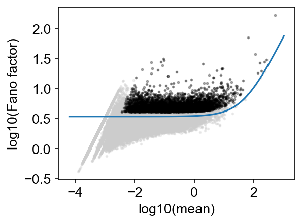
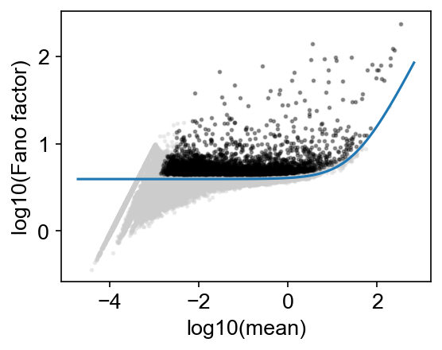
Highly varable gene number at t1 is 3689, Highly varable gene number at t2 is 3729
Common gene set is 1075
----------------
Step b: convert the shared highly variable genes into clonal info
No cells left for assignment, total used genes=851
----------------
Step c: compute the transition map based on clonal info from highly variable genes
---------Compute the transition map-----------
Compute similarity matrix: load existing data
--> Time elapsed: 0.29691505432128906
--> Time elapsed: 2.7558279037475586
--> Time elapsed: 0.18540501594543457
--> Time elapsed: 2.560216188430786
Compute similarity matrix: load existing data
--> Time elapsed: 0.23672795295715332
--> Time elapsed: 1.7196333408355713
--> Time elapsed: 0.19963407516479492
--> Time elapsed: 2.1012139320373535
Compute similarity matrix: load existing data
--> Time elapsed: 0.15925121307373047
--> Time elapsed: 2.2766659259796143
--> Time elapsed: 0.3380889892578125
--> Time elapsed: 1.0854458808898926
Current iteration: 0
Use smooth_round=20
Clone normalization
--> Relative time point pair index: 0
--> Clone id: 0
--> Clone id: 1000
Start to smooth the refined clonal map
Phase I: time elapsed -- 6.057301998138428
Phase II: time elapsed -- 7.385257959365845
Current iteration: 1
Use smooth_round=15
Clone normalization
--> Relative time point pair index: 0
--> Clone id: 0
--> Clone id: 1000
Start to smooth the refined clonal map
Phase I: time elapsed -- 5.1219611167907715
Phase II: time elapsed -- 6.49406099319458
Current iteration: 2
Use smooth_round=10
Clone normalization
--> Relative time point pair index: 0
--> Clone id: 0
--> Clone id: 1000
Start to smooth the refined clonal map
Phase I: time elapsed -- 4.645283937454224
Phase II: time elapsed -- 6.02990198135376
No need for Final Smooth (i.e., clonally states are the final state space for Tmap)
----Demultiplexed transition map----
Clone normalization
--> Relative time point pair index: 0
--> Clone id: 0
--> Clone id: 1000
Finishing computing transport map from highly variable genes, used time 135.27054286003113
----------------
Step 2: Jointly optimize the transition map and the initial clonal states!
Joint optimization that consider possibility of clonal overlap: v2
--> original clone shape: (12720, 272)
--> After excluding zero-sized clones at t2: (12720, 272)
Sort clones by size (small to large)
Infer the number of initial cells to extract for each clone in advance
--> Inferring early clonal states: current clone id 0
--> Inferring early clonal states: current clone id 100
--> Inferring early clonal states: current clone id 200
---------Compute the transition map-----------
Compute similarity matrix: load existing data
--> Time elapsed: 0.26981568336486816
--> Time elapsed: 0.8196010589599609
--> Time elapsed: 0.16419100761413574
--> Time elapsed: 0.4157860279083252
Compute similarity matrix: load existing data
--> Time elapsed: 0.2678558826446533
--> Time elapsed: 0.5867011547088623
--> Time elapsed: 0.15294790267944336
--> Time elapsed: 0.40844106674194336
Compute similarity matrix: load existing data
--> Time elapsed: 0.18117880821228027
--> Time elapsed: 0.580024003982544
--> Time elapsed: 0.18829822540283203
--> Time elapsed: 0.3908040523529053
Current iteration: 0
Use smooth_round=20
Clone normalization
--> Relative time point pair index: 0
--> Clone id: 0
Start to smooth the refined clonal map
Phase I: time elapsed -- 0.3066589832305908
Phase II: time elapsed -- 0.6201817989349365
Current iteration: 1
Use smooth_round=15
Clone normalization
--> Relative time point pair index: 0
--> Clone id: 0
Start to smooth the refined clonal map
Phase I: time elapsed -- 0.1289079189300537
Phase II: time elapsed -- 0.4577610492706299
Current iteration: 2
Use smooth_round=10
Clone normalization
--> Relative time point pair index: 0
--> Clone id: 0
Start to smooth the refined clonal map
Phase I: time elapsed -- 0.09908199310302734
Phase II: time elapsed -- 0.39781785011291504
Final round of Smooth (to expand the state space of Tmap to include non-clonal states)
Phase I: time elapsed -- 0.7827582359313965
Phase II: time elapsed -- 2.0664520263671875
----Demultiplexed transition map----
Clone normalization
--> Relative time point pair index: 0
--> Clone id: 0
Finishing computing transport map from CoSpar using inferred clonal data, used time 42.71480917930603
-------------------------------New Start--------------------------------------------------
Current time point: pos_21
-----------Pre-processing and sub-sampling cells------------
----------------
Step 1: Use highly variable genes to construct pseudo-clones, and apply CoSpar to generate initialized map!
HighVar-v0: avoid cells that have been selected
----------------
Step a: find the commonly shared highly variable genes
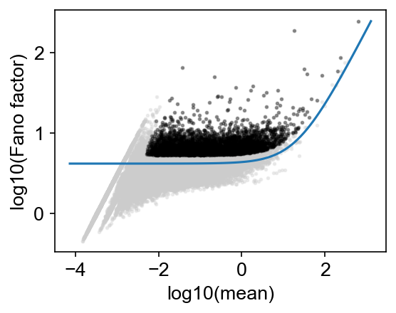
Highly varable gene number at t1 is 3794, Highly varable gene number at t2 is 3729
Common gene set is 1152
----------------
Step b: convert the shared highly variable genes into clonal info
No cells left for assignment, total used genes=1136
----------------
Step c: compute the transition map based on clonal info from highly variable genes
---------Compute the transition map-----------
Compute similarity matrix: load existing data
--> Time elapsed: 0.14574980735778809
--> Time elapsed: 1.5967421531677246
--> Time elapsed: 0.12334394454956055
--> Time elapsed: 1.4471712112426758
Compute similarity matrix: load existing data
--> Time elapsed: 0.11464405059814453
--> Time elapsed: 1.2609331607818604
--> Time elapsed: 0.08916783332824707
--> Time elapsed: 1.250248908996582
Compute similarity matrix: load existing data
--> Time elapsed: 0.12157678604125977
--> Time elapsed: 1.1028330326080322
--> Time elapsed: 0.11026191711425781
--> Time elapsed: 0.8104751110076904
Current iteration: 0
Use smooth_round=20
Clone normalization
--> Relative time point pair index: 0
--> Clone id: 0
--> Clone id: 1000
Start to smooth the refined clonal map
Phase I: time elapsed -- 1.530857801437378
Phase II: time elapsed -- 2.5124118328094482
Current iteration: 1
Use smooth_round=15
Clone normalization
--> Relative time point pair index: 0
--> Clone id: 0
--> Clone id: 1000
Start to smooth the refined clonal map
Phase I: time elapsed -- 1.3739171028137207
Phase II: time elapsed -- 2.476722002029419
Current iteration: 2
Use smooth_round=10
Clone normalization
--> Relative time point pair index: 0
--> Clone id: 0
--> Clone id: 1000
Start to smooth the refined clonal map
Phase I: time elapsed -- 1.3121211528778076
Phase II: time elapsed -- 2.465062141418457
No need for Final Smooth (i.e., clonally states are the final state space for Tmap)
----Demultiplexed transition map----
Clone normalization
--> Relative time point pair index: 0
--> Clone id: 0
--> Clone id: 1000
Finishing computing transport map from highly variable genes, used time 95.43795609474182
----------------
Step 2: Jointly optimize the transition map and the initial clonal states!
Joint optimization that consider possibility of clonal overlap: v2
--> original clone shape: (12535, 272)
--> After excluding zero-sized clones at t2: (12535, 272)
Sort clones by size (small to large)
Infer the number of initial cells to extract for each clone in advance
--> Inferring early clonal states: current clone id 0
--> Inferring early clonal states: current clone id 100
--> Inferring early clonal states: current clone id 200
---------Compute the transition map-----------
Compute similarity matrix: load existing data
--> Time elapsed: 0.09975194931030273
--> Time elapsed: 0.4999051094055176
--> Time elapsed: 0.09682202339172363
--> Time elapsed: 0.4227142333984375
Compute similarity matrix: load existing data
--> Time elapsed: 0.09620094299316406
--> Time elapsed: 0.482684850692749
--> Time elapsed: 0.09868907928466797
--> Time elapsed: 0.35282206535339355
Compute similarity matrix: load existing data
--> Time elapsed: 0.0907740592956543
--> Time elapsed: 0.3866617679595947
--> Time elapsed: 0.07892918586730957
--> Time elapsed: 0.2702147960662842
Current iteration: 0
Use smooth_round=20
Clone normalization
--> Relative time point pair index: 0
--> Clone id: 0
Start to smooth the refined clonal map
Phase I: time elapsed -- 0.22093629837036133
Phase II: time elapsed -- 0.5003211498260498
Current iteration: 1
Use smooth_round=15
Clone normalization
--> Relative time point pair index: 0
--> Clone id: 0
Start to smooth the refined clonal map
Phase I: time elapsed -- 0.1145479679107666
Phase II: time elapsed -- 0.44263291358947754
Current iteration: 2
Use smooth_round=10
Clone normalization
--> Relative time point pair index: 0
--> Clone id: 0
Start to smooth the refined clonal map
Phase I: time elapsed -- 0.09056806564331055
Phase II: time elapsed -- 0.4043281078338623
Final round of Smooth (to expand the state space of Tmap to include non-clonal states)
Phase I: time elapsed -- 0.39678382873535156
Phase II: time elapsed -- 1.7405269145965576
----Demultiplexed transition map----
Clone normalization
--> Relative time point pair index: 0
--> Clone id: 0
Finishing computing transport map from CoSpar using inferred clonal data, used time 33.91204500198364
-----------Total used time: 1033.2948069572449 s ------------
Save data or load¶
[13]:
save_data=False
if save_data:
cs.hf.save_map(adata)
load_data=False
if load_data:
## updated Jan 27, 2021
#data_des='paper_OneTimeClone_t*pos_17*pos_21*D27'
data_des='CoSpar_OneTimeClone_t*pos_17*pos_21*D27' # computed on Jan 30, 2021
adata=cs.hf.load_saved_adata_with_key(data_des)
Plotting¶
Plot fate map¶
[14]:
cs.pl.fate_map(adata,selected_fates=['iACE2'],plot_time_points=['pos_17','pos_21'],
used_map_name='transition_map',map_backwards=True,plot_target_state=True)
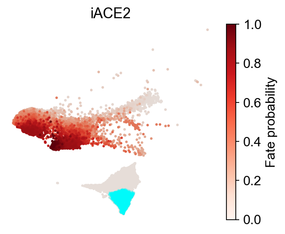
Relative fate bias¶
[15]:
cs.pl.fate_bias_intrinsic(adata,selected_fates=['iACE2'],used_map_name='transition_map',
plot_time_points=['pos_17','pos_21'],plot_target_state=False,map_backwards=True,plot_color_bar=False,plot_background=False)
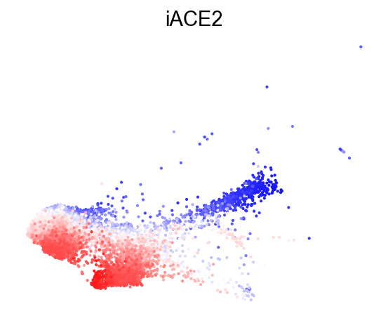
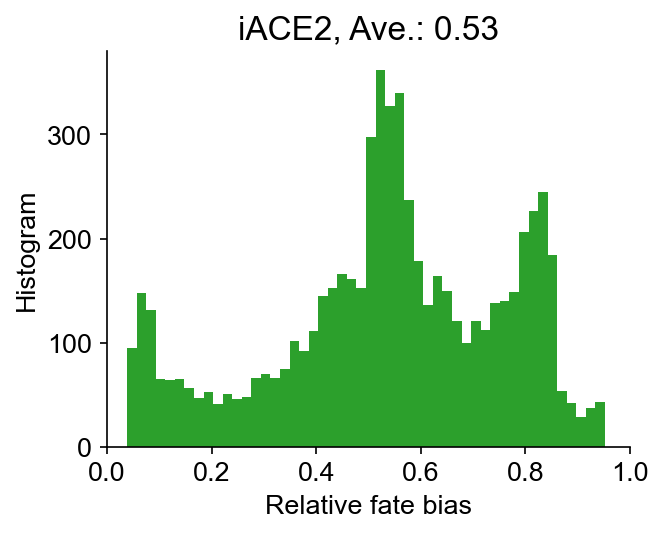
[16]:
# This produces an average bias score that is close the the average clonal fate bias.
selected_fates=['iACE2',['PENC', 'Gut', 'NLE', 'Endoderm']]
cs.pl.fate_bias_from_binary_competition(adata,selected_fates,used_map_name='transition_map',
plot_time_points=['pos_17'],plot_target_state=False,map_backwards=True)
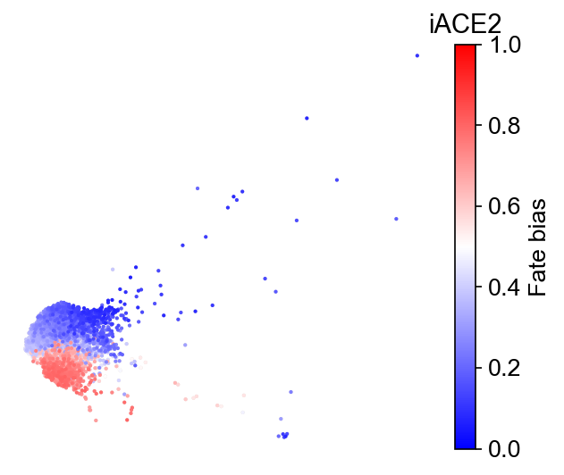
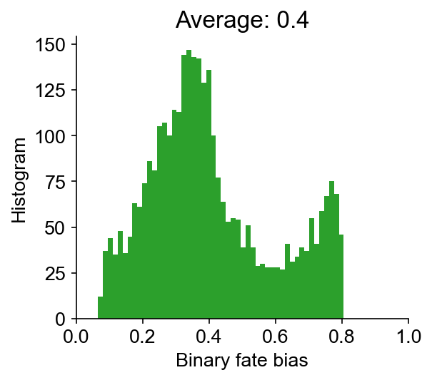
Dynamic trajectory inference on day 17¶
[17]:
selected_fates=['iACE2',['PENC', 'Gut', 'NLE', 'Endoderm']]
cs.pl.dynamic_trajectory_from_intrinsic_bias(adata,selected_fates,
used_map_name='transition_map',bias_threshold_A=0.7,bias_threshold_B=0.7,
plot_time_points=['pos_17'])
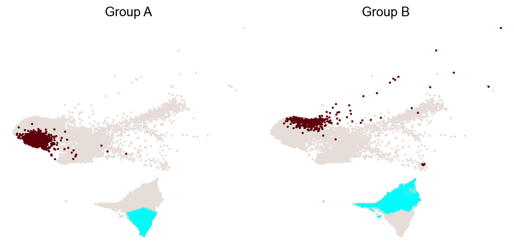
Differential genes for two ancestor groups on day 17¶
[18]:
dge_gene_A, dge_gene_B=cs.pl.differential_genes(adata,plot_gene_N=2,gene_N=100)
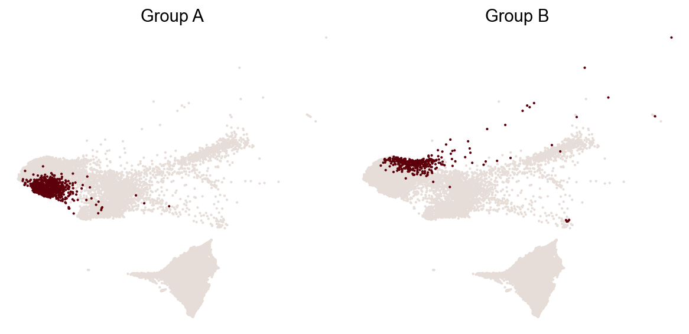
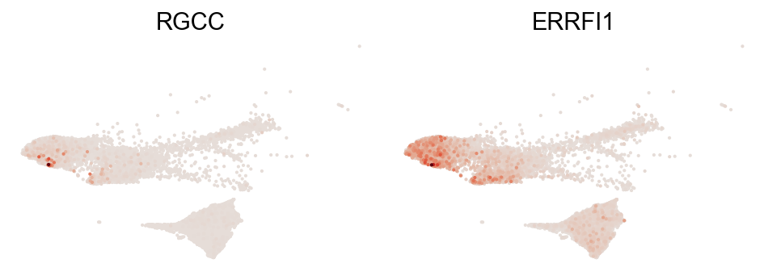
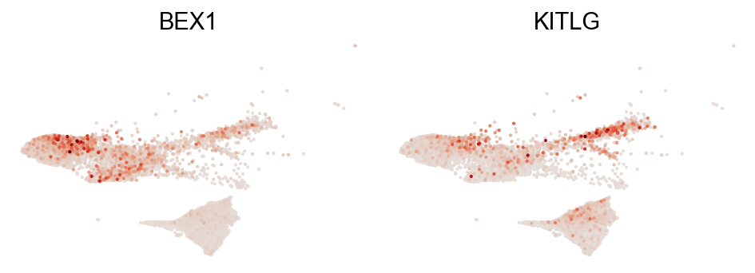
[19]:
dge_gene_A
[19]:
| gene | pv | mean_1 | mean_2 | ratio | |
|---|---|---|---|---|---|
| 225 | RGCC | 2.385363e-07 | 0.516128 | 4.353754 | -1.820160 |
| 0 | ERRFI1 | 1.819216e-77 | 4.772617 | 18.868851 | -1.783211 |
| 110 | KLF9 | 3.809360e-14 | 0.074725 | 2.650913 | -1.764289 |
| 28 | STOM | 5.723646e-29 | 0.542995 | 4.004713 | -1.697554 |
| 111 | AQP3 | 5.064844e-14 | 0.043671 | 1.504599 | -1.262912 |
| ... | ... | ... | ... | ... | ... |
| 378 | RNF145 | 1.506951e-04 | 0.507620 | 1.158090 | -0.517482 |
| 652 | ZADH2 | 8.800334e-03 | 0.261093 | 0.802966 | -0.515697 |
| 317 | ALDH2 | 3.303192e-05 | 1.010561 | 1.871094 | -0.514002 |
| 401 | XPR1 | 2.812946e-04 | 1.372163 | 2.381748 | -0.511566 |
| 280 | FNDC3B | 7.389887e-06 | 2.147762 | 3.475198 | -0.507625 |
100 rows × 5 columns
Dynamic trajectory on both day 17 and 21¶
[20]:
selected_fates=['iACE2',['PENC', 'Gut', 'NLE', 'Endoderm']]
cs.pl.dynamic_trajectory_from_intrinsic_bias(adata,selected_fates,
used_map_name='transition_map',bias_threshold_A=0.7,bias_threshold_B=0.7,
plot_time_points=['pos_17','pos_21'])
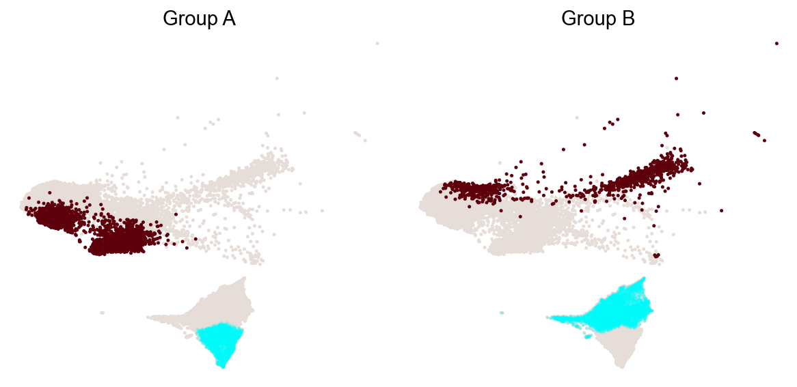
Gene trend along the dynamic trajectory¶
The selected states, combined with the target states are stored as dynamic trajectory at adata.uns[‘dynamic_trajectory’]. We can plot gene trend along this trajectory
[21]:
adata_selected=cs.pl.gene_expression_dynamics(adata,selected_fate='iACE2',include_target_states=False,
gene_name_list=['NEAT1', 'RGCC', 'KLF9', 'ERRFI1', 'AQP3', 'CDH1', 'CTD-2562J17.7'])
/Users/shouwenwang/miniconda3/envs/CoSpar_env/lib/python3.6/site-packages/plotnine/ggplot.py:729: PlotnineWarning: Saving 3.5 x 2.163 in image.
/Users/shouwenwang/miniconda3/envs/CoSpar_env/lib/python3.6/site-packages/plotnine/ggplot.py:730: PlotnineWarning: Filename: lung_figure_test_2/Lung_OneTimeClone_t*pos_17*pos_21*D27_fate_trajectory_pseutoTime_gene_expression_iACE2_True.png
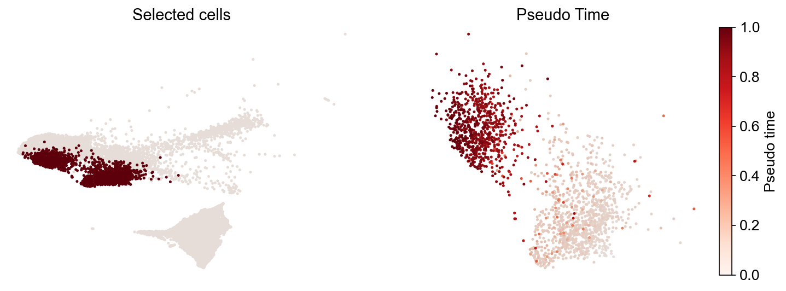
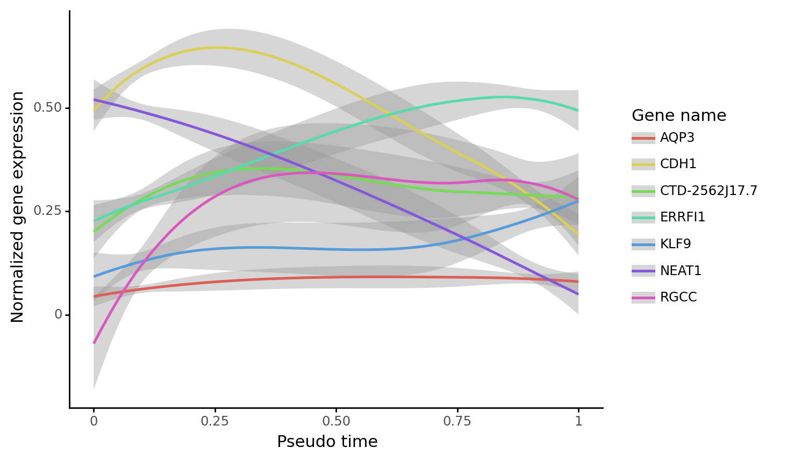